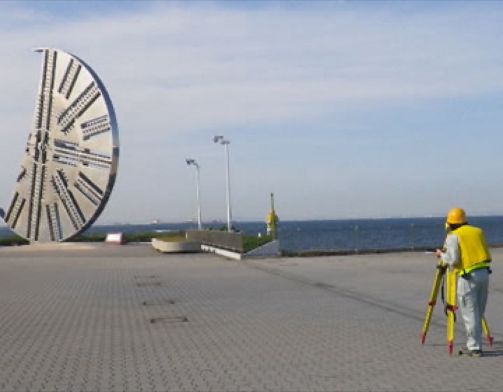
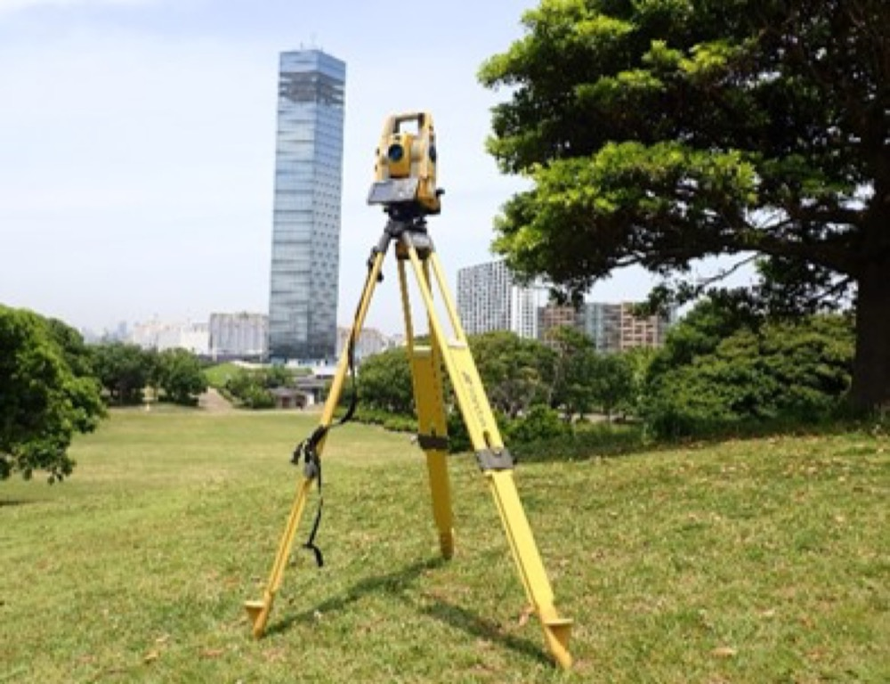
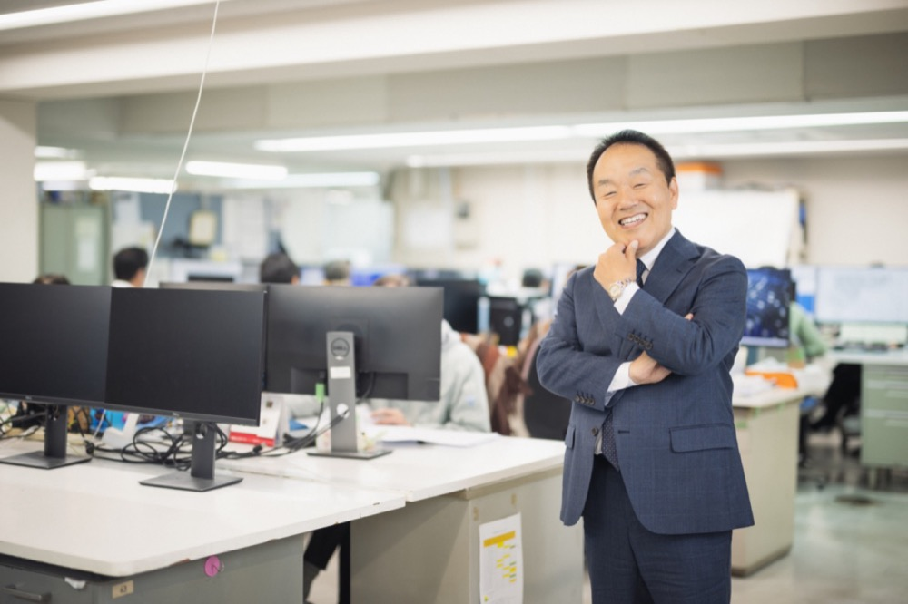

立体世界を映し出す測量会社
大石 哲Satoshi Oishi
サン・ジオテック株式会社 代表取締役
1963年東京都生まれ。日本大学理工学部土木工学科を卒業後、測量会社大手に入社。GPSや合成開口レーダーの研究、国土地理院への出向、アフリカのニジェール共和国での国家基準点のプロジェクトにGPSのチームリーダーとしての参画を経験。アジア航測に入社後、執行役員を経て、2023年にサン・ジオテック代表取締役に就任。
企業サイトを見るTRACK 01
立体世界を映し出す測量会社

古代から続く職業のひとつに、測量がある。アスワン・ハイ・ダムが未完成だったその昔、エジプトのナイル川が氾濫するたびにその土地を正確に測り直し、農地を分け直したという。あのピラミッドこそ、多数の測量結果をもとに、綿密に手順を考えて建築に至ったとされている。そして現在。千葉市中央区に、地域に根ざしながら世界全国へ技術を還元し、まるで目の前の風景に命を吹き込むかのごとく測量情報を刻み続ける会社がある。
サン・ジオテック株式会社は1969年、航空写真測量を礎に、アジア航測株式会社のグループ会社として誕生した。以来、50年以上にわたって空間情報技術の最前線を走り続けてきた。緻密な点群、赤色立体地図、3Dサービス…提供するその技術は業界のなかでも幅広く、平面図だけでは見えない世界を、航空機からUAV（無人航空機）、車両や地上型機器まで、多種多彩なプラットフォームを用いた計測データを活用することで「立体地図」としてモニターの上に描き出す。
この世界を操るサン・ジオテックの代表が、大石哲だ。大学の土木工学科を卒業後、GPS黎明期に測量業界大手へ入社。山岳の三角測量から国土地理院での部外研究員、そして社内の「空間情報大学」開校…あらゆる場所へ飛び込み続けたその歩みは、まさしく冒険譚という名にふさわしい。
TRACK 02
ドラマのような高校3年間の寮生活
大石の学校生活は、令和の高校生では想像できないほど刺激的なものだった。「全国でも珍しい全寮制の公立高校でした。まず、朝6時にアラームで叩き起こされます。6時半の点呼で仲間と顔を合わせます。そこから教室へ向かい、17時45分の帰寮後も、入浴、食事、そして22時半まで学習の時間が続きます。23時の就寝まで一瞬の隙も許されなかったです。しかも8人部屋でした。今でこそまるでドラマのようかもしれませんが（笑）…あの3年間で養われた、洗練された協調性と継続力は、現場の仕事で大きく役に立ちました」
大学では測量学を学び、卒業後は業界大手に入社。GPS黎明期の山岳三角測量から、合成開口レーダー研究、つくばの国土地理院出向など、全国を股にかけた実測と研究に没頭した。
さらに異国の地、ニジェールへ。日本から約12,000km離れている、治安が良いとは決して言えない、西アフリカの一国だ。その国家基準点の策定プロジェクトに参画した大石は、一面砂漠のエリアを、15名ほどのメンバーと共に測量。砂塵と熱波に囲まれながら、1年かけて現地でその国家体系を築いた体験は「どんな困難も仲間と越えられる」という自信の源泉となった。


TRACK 03
実は“学長”
サン・ジオテックの最大の矢は「応用測量」だ。道路建設の中心線を決める路線測量、用地買収に不可欠な境界測量、河川の氾濫リスクを数値化する縦横断測量、この三本柱に、航空レーザーや車載レーザー（MMS）、地上型レーザーをハイブリッドに組み合わせる。災害現場の迅速把握、都市計画のシミュレーション、文化財保護の精密解析…。大容量の点群処理から赤色立体地図、さらには３次元サービスまで、地域の声を受け止めて形にする技術は、高く評価されている。
一方、社内の人材育成にも熱い。週次ブリーフィングでは、一人ひとりの成果を可視化し「報・連・相」「挨拶」「議事録」の書き方まで細部にわたって指導。現場でのOJTも重視している。また大石はアジア航測時代、社内にグループ全体で視聴可能な「空間情報大学」を開設。約400講座をYouTube形式で配信する体制を構築し、いつでも、どこでも、誰でも、社会人の基礎から測量の応用まで学べる環境を整えた。属人的になりがちな「技術の空洞化」問題に対し、最適な布石を打ったのである。